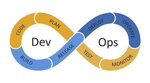

DevOps on arendusmudel, mis ühendab tarkvaraarenduse ja IT-operatsioonid, eesmärgiga parandada tarkvara tarnimise kiirust, usaldusväärsust ja kvaliteeti. DevOps keskendub meeskondade vahelise koostöö ja suhtluse parandamisele, automatiseerimisele ning pidevale integratsioonile ja pidevale tarnimisele. DevOps võimaldab arendajatel ja süsteemiadministraatoritel töötada ühise eesmärgi nimel – kiire ja kvaliteetne tarkvara tarnimine, mis vastab kasutajate ootustele. See mudel sobib hästi pilvepõhiste rakenduste, mikroteenuste ja keskkondade jaoks, kus tarkvara uuendused ja parandused peavad toimuma regulaarselt ja kiiresti.

| Positiivsed küljed | Negatiivsed küljed |
|---|---|
| Kiirem tarkvara tarnimine ja lühem arendustsükkel. | Nõuab suurt kultuurimuutust organisatsioonis, mis võib olla keeruline. |
| Pidev integratsioon ja pidev tarnimine (CI/CD) tagavad stabiilse ja kvaliteetse koodi. | Algne seadistamine ja tööriistade integreerimine võib olla keeruline ja ajamahukas. |
| Parandab koostööd arendajate ja IT-operatsioonide vahel. | Töövoogude automatiseerimine võib vajada keerukat skriptimist ja teadmisi. |
| Parem nähtavus ja jälgitavus süsteemi toimimises tänu monitooringule ja logimisele. | Võib tekitada turvaprobleeme, kui automatiseerimine ei ole korralikult hallatud. |